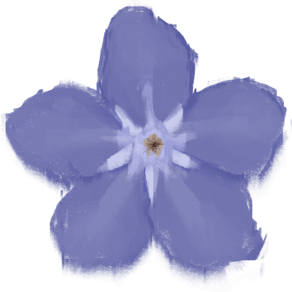
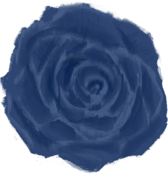

The Garden:
Forget-Me-Not and Blue Rose

And so, we remember that sorrowful reminder of her.
She wished, yet was never answered.
When she was still with us.
She gave us flowers.
A forget-me-not, usually.
She had naught but a forget-me-not.
But she longed for a blue rose.
And then, she was not with us anymore.
As the Great Unknown had called to her.
An eternity of exile, of atonement.
Full of suffering and of regret.
For we will never see her again.
For she will never see us again.

Discovered on a very small tablet scavenged by PET-Agent Rui during Expedition 1.421 at Depth 100.